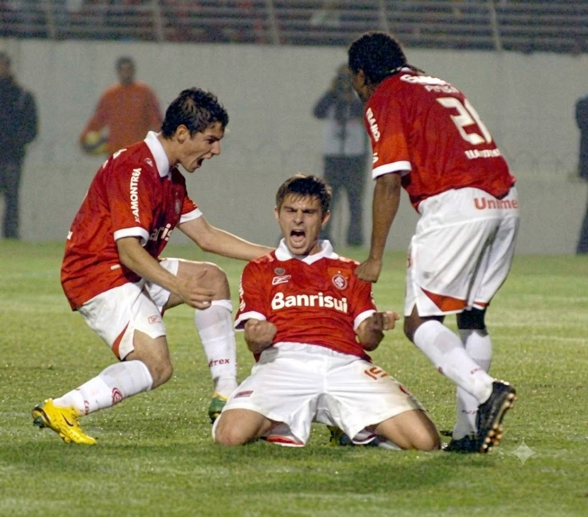
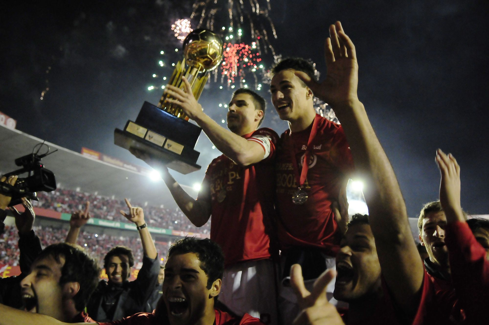

As conquistas que consolidaram o Internacional entre os grandes da América
O Sport Club Internacional conquistou a Recopa Sul-Americana em duas oportunidades, nos anos de 2007 e 2011. A competição reúne os campeões da Libertadores e da Sul-Americana, colocando frente a frente algumas das melhores equipes do continente.
🏆 Recopa Sul-Americana de 2007
Após conquistar a Libertadores e o Mundial em 2006, o Internacional iniciou 2007 disputando a Recopa Sul-Americana contra o Pachuca, do México. Depois de perder a primeira partida por 2 a 1, o Colorado precisava de uma grande atuação diante de sua torcida.

No Beira-Rio, a equipe venceu por 4 a 0 e conquistou mais um importante troféu internacional. A vitória confirmou o excelente momento vivido pelo clube e ampliou ainda mais sua galeria de conquistas continentais.
🏆 Recopa Sul-Americana de 2011
Em 2011, o Internacional voltou a disputar a competição após conquistar a Libertadores de 2010. O adversário da vez foi o tradicional Independiente, da Argentina. Após perder o primeiro confronto por 2 a 1, o Colorado precisava reverter a situação em Porto Alegre.

Empurrado por sua torcida, o Inter venceu por 3 a 1 e garantiu sua segunda Recopa Sul-Americana. Jogadores como Oscar, D'Alessandro e Leandro Damião tiveram papel decisivo na campanha.
As duas Recopas reforçaram a posição do Internacional como uma das equipes mais vencedoras do continente durante a primeira década do século XXI.